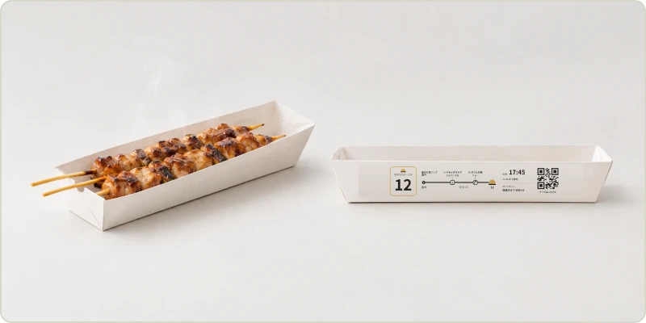
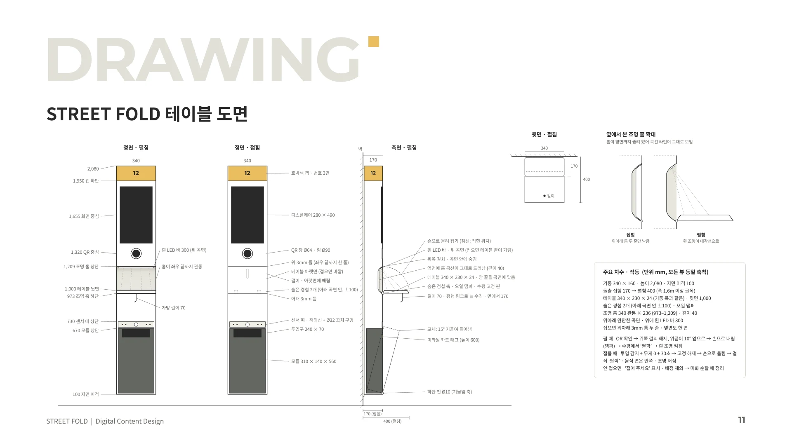

STREET FOLD
부위를 눌러 보세요.
점이나 왼쪽 목록을 누르면 그 부분으로 다가가 움직임과 설명을 보여 줍니다. 끌어서 돌려 볼 수도 있습니다.
PRODUCT 01 — 2030 명동 거리
노점에서 받은 스티커 한 장이,
골목의 빈 테이블을 엽니다.
WHY
노점 앞은 붐비고, 한 골목만 들어가면 자리가 비어 있습니다. 꼬치를 산 사람은 먹을 곳을 찾아 서성이고, 쓰레기는 가장 가까운 노점에 쌓입니다. 필요한 건 더 큰 테이블이 아니라, 지금 비어 있는 자리로 이어 주는 한 장의 안내입니다.
01 — FOLD MARK
FOLD MARK는 노점 카운터에 두는 손바닥만 한 약도 프린터입니다. 사장님은 길을 설명하지 않아도 됩니다. 주먹으로 한 번 치면, AI가 지금 비어 있는 STREET FOLD를 골라 가는 길을 스티커 한 장에 담아 줍니다.
아이보리 윗면 가운데의 움푹한 홈이 주먹이 닿는 자리입니다. 파낸 구멍이 아니라 면이 이어지며 완만하게 꺼져 있어, 기름 묻은 손으로도 바쁜 순간에도 누를 곳을 찾을 필요가 없습니다.
치는 순간 AI가 골목 테이블의 빈자리, 손님이 갈 방향, 걷는 시간을 함께 따져 한 자리를 고릅니다. 앞 끝의 호박색 빛 띠가 빠르게 깜박이면 고르는 중, 밝게 켜지면 출력 완료입니다.
홈 바로 뒤, 차콜 뚜껑과 만나는 틈에서 약도 스티커가 50°로 올라옵니다. 주먹으로 친 방향 그대로 올라오기 때문에, 손 각도를 다시 맞출 필요 없이 그대로 뽑으면 됩니다.
사장님은 스티커를 트레이 옆면에 붙여 건넵니다. 손님은 트레이를 든 채 약도를 보며 걷고, 도착하면 그 옆면을 테이블에 댑니다.

끌어서 돌려 보고, 가까이 보고, 윗면의 움푹한 홈을 눌러 스티커를 뽑아 보세요.
앞 빛 띠가 말해 주는 것
윗면 홈을 누르면 새 스티커가 나옵니다.
02 — STREET FOLD
골목 벽에 붙어 서 있는 폭 34cm의 기둥입니다. 쓰지 않을 때는 길을 막지 않고, 트레이를 대면 판이 내려와 한 사람의 식사 자리가 됩니다. 먹고 난 쓰레기도 같은 자리에서 끝납니다.
STREET FOLD
점이나 왼쪽 목록을 누르면 그 부분으로 다가가 움직임과 설명을 보여 줍니다. 끌어서 돌려 볼 수도 있습니다.
03 — HOW IT CONNECTS
사장님의 주먹 한 번, 손님 트레이의 QR 한 번. 사람이 하는 일은 이 두 가지입니다.
골목 테이블의 사용 상태, 손님이 갈 방향, 걷는 시간을 함께 보고 한 자리를 고릅니다. 얼굴이나 개인 정보는 쓰지 않습니다.
스티커가 나오고, 판이 내려오고, 수거할 때는 쓰레기통이 기울어 나옵니다. 판을 다시 올리는 것은 사람의 손입니다.
04 — SPECS
